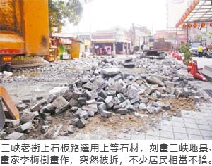

三峽老街 公所拆了招牌石板路
連珮宇｜聯合報／新北市新聞｜2016年4月7日
三峽老街9年前選用花崗岩、青斗石鋪設石板路面，並以刻畫有三峽地景、畫作的鑄鐵蓋圍繞，成為老街招牌風貌，但石板地面雨天濕滑，頻傳民眾摔傷，區公所昨天拆除，改鋪柏油，不少居民表達不捨。
昨天拆除現場，當地文史工作者紛紛搬移破碎石材至其他公共空間擺放利用，但工程進行快速，最後僅留下不到10多塊，「看到過去心血被打成碎片，很可惜，也很痛心」。
三峽區公所工務課長湯雁鈞表示，地面拆除工程經當地里長、派出所等單位多方討論後才決議，昨日清晨啟動，由於石材與地面水泥連結性強，因此全面敲碎後再搬清，晚間鋪上柏油，今天即可正常通車。
三峽李梅樹紀念館聲明表示，三峽老街今年適逢100周年，民間各單位紛紛舉辦藝文展覽誌慶，區公所卻出動怪手「同慶」，令人不勝唏噓。紀念館9年前無償提供李梅樹畫作，製作模具生產鑄鐵蓋，昨天拆除後，紀念館將不同意轉移他處使用，否則將依法追訴。
居民張光驊說，9年前老街整建，是在地人歷經20年努力才爭取到的，整建不僅成功吸引大批觀光客，台灣各熱門觀光處也群起效仿。
秀川里里長李楷瑞表示，拆除的地域為三峽老街口，非行人徒步區，但為一旁派出所等單位車輛重要出入口，過去每逢雨天就有員警、民眾騎車摔傷，經多次反映，才決定拆除改鋪柏油，實屬不得已，但30組鑄鐵蓋已妥善保存，未來將改放置長福橋上展示。